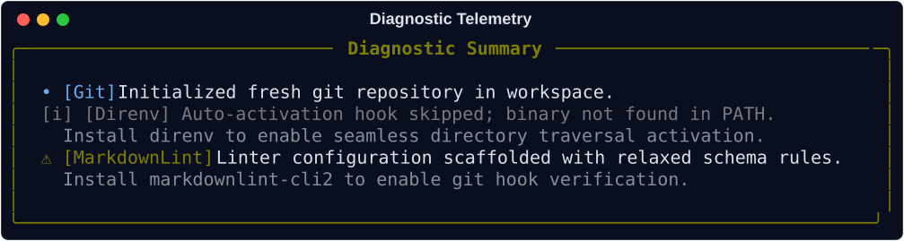

The Orchestrator¶
The Orchestrator operates as the primary deterministic state machine for Protostar. It is responsible for bridging the gap between declarative module configurations and imperative disk/shell mutations, ensuring the local filesystem is manipulated safely and predictably.
To guarantee idempotency and prevent partial initialization states (e.g., half-written configuration files following a pre-flight failure), the Orchestrator enforces a strict, multi-phase execution topology.
Execution Lifecycle & Topology¶
The Orchestrator enforces a strict separation between read-only state aggregation and physical side effects (the Engine Bulkhead). The core engine is purely headless: it ingests caller intent via an InitRequest, calculates the complete environment manifest via plan(), and mutates the workspace via execute(), returning an immutable ExecutionResult.
All terminal interaction (collision prompts, remote trust confirmations, progress spinners) is isolated in the CLI presentation layer (cli.py).
flowchart TD
classDef boundary fill:#0f172a,stroke:#38bdf8,stroke-width:1px,color:#e2e8f0;
classDef phase fill:#1e293b,stroke:#1e293b,stroke:#00e5ff,stroke-width:2px,color:#fff;
classDef state fill:#334155,stroke:#7c4dff,stroke-width:2px,color:#fff;
classDef error fill:#7f1d1d,stroke:#f87171,stroke-width:1px,color:#fff;
classDef success fill:#14532d,stroke:#4ade80,stroke-width:1px,color:#fff;
Req([InitRequest]):::boundary --> Plan["Phase 1: plan()<br/>• Workspace collision checks<br/>• Pre-flight binary verification<br/>• Manifest aggregation"]:::phase
Plan -->|Validation Failure| Err["Raise ProtostarError<br/>(Caught by CLI Presentation Layer)"]:::error
Plan -->|Plan Validated| Manifest[(EnvironmentManifest)]:::state
Manifest -->|--dry-run / --json| DryRun([Serialize Manifest / Dry Run]):::boundary
Manifest -->|Live Execution| Exec["Phase 2: execute()<br/>• Validate & deep-merge ASTs<br/>• Scaffold directories & inject files<br/>• Execute managed subprocesses"]:::phase
Exec --> Result([ExecutionResult]):::successThe Lifecycle Phases¶
The plan() phase calculates the target state without performing disk mutations:
- Collision Check: Scans the workspace for existing configuration markers (e.g.,
pyproject.toml). If collisions exist and no force flag is active, raisesWorkspaceCollisionError(paths=...). - Pre-Flight Verification: Runs
pre_flight()across all loaded modules to assert that required binaries (uv,git, etc.) exist in$PATH. - Manifest Aggregation: Evaluates language, tooling, and preset modules to populate an
EnvironmentManifestwith file injections, AST merge payloads, ignore patterns, and system tasks.
When WorkspaceCollisionError or untrusted external templates are encountered:
- Interactive TUI: In interactive terminals,
cli.pyprompts you toMerge,Overwrite, orAbort. If authorized, it generates a freshInitRequestwith updated force flags and callsplan()again. - Headless Contexts: In non-interactive environments (CI/CD),
cli.pyaborts safely with an error message instructing you to supply--force-mergeor--force-replace.
The execute() phase hands the calculated manifest to SystemExecutor to apply all side effects in a deterministic sequence:
- Validates existing TOML files for syntax errors.
- Creates directories and injects base files.
- Modifies configurations via AST deep-merging.
- Writes deduplicated ignore files and Docker artifacts.
- Writes local IDE settings.
- Executes sequential subprocesses (package resolution, git hooks).
Interrupting this phase via KeyboardInterrupt raises PartialExecutionAbortedError, recording all paths modified so far.
Telemetry & Diagnostics¶
During planning and execution, non-fatal skips and warnings (e.g., missing optional binaries like direnv or skipped optional tasks) are recorded into ExecutionResult.diagnostics. The CLI presentation layer renders these events in a structured summary panel upon completion:

For unexpected internal exceptions or AST parsing failures, the runtime traps errors at the CLI boundary to generate pre-filled GitHub crash reports without corrupting the workspace. For complete details on the exception hierarchy, POSIX exit code mappings, and crash issue generation, see the Error Handling Architecture.
API Reference¶
Caller Intent: InitRequest
protostar.models.InitRequest
dataclass
¶
Declarative intent from the caller for a scaffolding run.
Attributes:
| Name | Type | Description |
|---|---|---|
template_blueprint |
TemplateBlueprint | None
|
An optional pre-loaded template blueprint to apply. |
python_version |
str | None
|
An optional Python version string (e.g. '3.13'). Informational; the modules list is already constructed with the resolved version. |
docker |
bool
|
If True, scaffolds container artifacts (.dockerignore, Dockerfile). |
force_merge |
bool
|
If True, bypasses collision prompts and forces a merge strategy. |
force_replace |
bool
|
If True, bypasses collision prompts and forces an overwrite strategy. |
metadata |
dict[str, Any] | None
|
Pre-resolved metadata dictionary to inject into the manifest. |
is_external |
bool
|
If True, the template was loaded from an external (untrusted) source. |
is_user_aliased |
bool
|
If True, the template was resolved via a trusted global config alias. |
Source code in src/protostar/models.py
Execution Outcome: ExecutionResult
protostar.models.ExecutionResult
dataclass
¶
Observed outcome returned by Orchestrator.execute().
Attributes:
| Name | Type | Description |
|---|---|---|
touched_paths |
frozenset[str]
|
Immutable set of relative paths written or created on disk. |
diagnostics |
tuple[DiagnosticEvent, ...]
|
Ordered tuple of non-fatal diagnostic events emitted during execution. |
Source code in src/protostar/models.py
to_dict ¶
Serializes the execution result to a JSON-safe dictionary.
The touched_paths frozenset is emitted as a sorted list for deterministic
output. Each diagnostic event is emitted as an explicit dict; the optional
detail field is omitted when absent to keep payloads compact.
Returns:
| Type | Description |
|---|---|
dict[str, Any]
|
A JSON-serializable dictionary representation. |
Source code in src/protostar/models.py
Core Interface: Orchestrator
protostar.orchestrator.Orchestrator ¶
Manages the lifecycle of the Python environment scaffolding process.
The orchestrator provides a strict two-phase API: - plan(): Evaluates the workspace state and assembles a declarative EnvironmentManifest without mutating the filesystem. - execute(): Takes an already-built manifest and realizes it on disk.
This separation guarantees that plan() is always safe to retry (it instantiates a fresh manifest on every call), and that execute() never performs planning, collision detection, or user interaction.
Source code in src/protostar/orchestrator.py
29 30 31 32 33 34 35 36 37 38 39 40 41 42 43 44 45 46 47 48 49 50 51 52 53 54 55 56 57 58 59 60 61 62 63 64 65 66 67 68 69 70 71 72 73 74 75 76 77 78 79 80 81 82 83 84 85 86 87 88 89 90 91 92 93 94 95 96 97 98 99 100 101 102 103 104 105 106 107 108 109 110 111 112 113 114 115 116 117 118 119 120 121 122 123 124 125 126 127 128 129 130 131 132 133 134 135 136 137 138 139 140 141 142 143 144 145 146 147 148 149 150 151 152 153 154 155 156 157 158 159 160 161 162 163 164 165 166 167 168 169 170 171 172 173 174 175 176 177 178 179 180 181 182 183 184 185 186 187 188 189 190 191 192 193 194 | |
__init__ ¶
Initializes the orchestrator with the requested modules and intent.
Parameters:
| Name | Type | Description | Default |
|---|---|---|---|
modules
|
list[BootstrapModule]
|
The ordered stack of bootstrap layers to apply. |
required |
user_config
|
UserConfig
|
The active UserConfig instance. |
required |
request
|
InitRequest | None
|
Optional InitRequest describing caller intent. Defaults to a no-op InitRequest if omitted. |
None
|
Source code in src/protostar/orchestrator.py
plan ¶
Evaluates workspace state and assembles a declarative EnvironmentManifest.
A fresh EnvironmentManifest is instantiated on every call, guaranteeing that retries (e.g. after a collision resolution) start from a clean slate.
Raises:
| Type | Description |
|---|---|
WorkspaceCollisionError
|
If collision markers exist on disk and no force flag (force_merge / force_replace) was provided in the request. |
MissingDependencyError
|
If a module pre-flight check fails. |
Returns:
| Type | Description |
|---|---|
EnvironmentManifest
|
A populated EnvironmentManifest ready to be passed to execute(). |
Source code in src/protostar/orchestrator.py
60 61 62 63 64 65 66 67 68 69 70 71 72 73 74 75 76 77 78 79 80 81 82 83 84 85 86 87 88 89 90 91 92 93 94 95 96 97 98 99 100 101 102 103 104 105 106 107 108 109 110 111 112 113 114 115 116 117 118 119 120 121 122 123 124 125 126 127 128 129 130 131 132 133 134 135 136 137 138 139 140 141 142 143 144 145 146 147 148 149 150 151 152 153 154 155 156 157 158 159 160 161 162 163 164 165 | |
execute ¶
Realizes the pre-built manifest on disk.
Takes an already-built manifest from plan() and executes it. Performs no planning, collision detection, template resolution, or user interaction.
Parameters:
| Name | Type | Description | Default |
|---|---|---|---|
manifest
|
EnvironmentManifest
|
The populated EnvironmentManifest to execute. |
required |
Raises:
| Type | Description |
|---|---|
PartialExecutionAbortedError
|
If the user interrupts execution after disk mutations have already begun. |
Returns:
| Type | Description |
|---|---|
ExecutionResult
|
An ExecutionResult describing what was touched and any diagnostics. |
Source code in src/protostar/orchestrator.py
Related Mechanics & Guides¶
- The Environment Manifest: Deep dive into the structured state container generated during the
plan()phase. - The System Executor: See how the executor applies atomic AST deep-merges, file injections, and subprocess execution.
- Error Handling Architecture: Learn how the orchestrator traps exceptions and routes them to POSIX exit codes and telemetry reports.